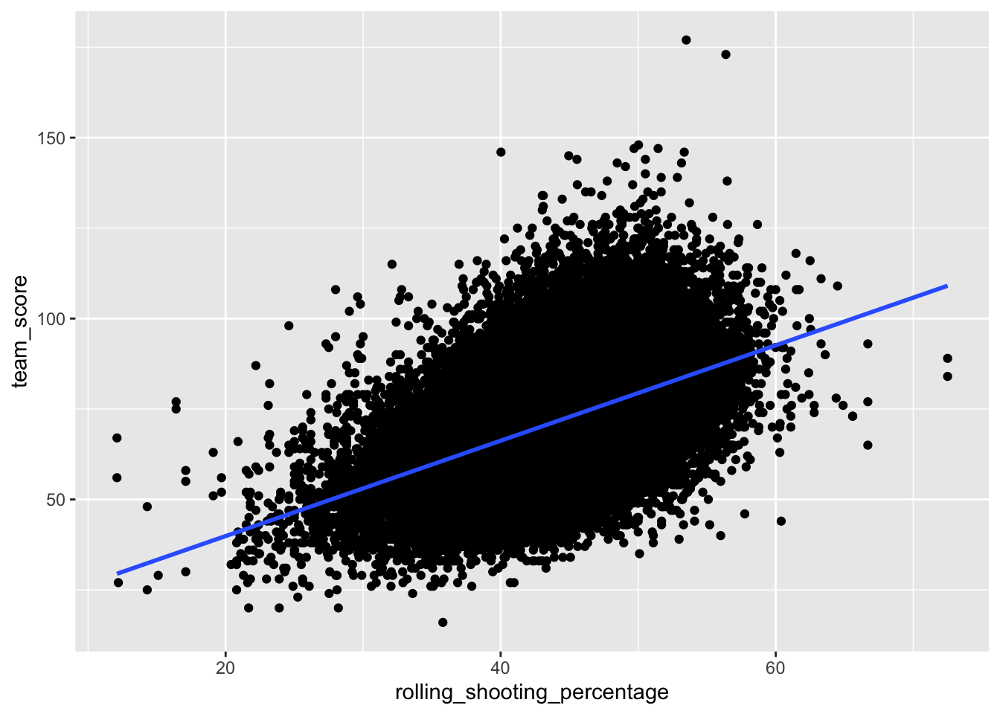
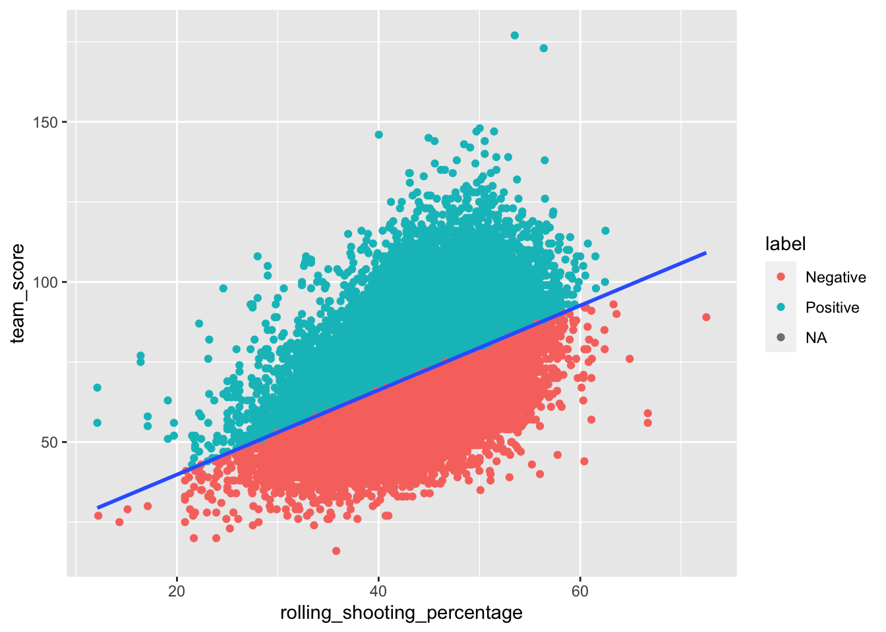
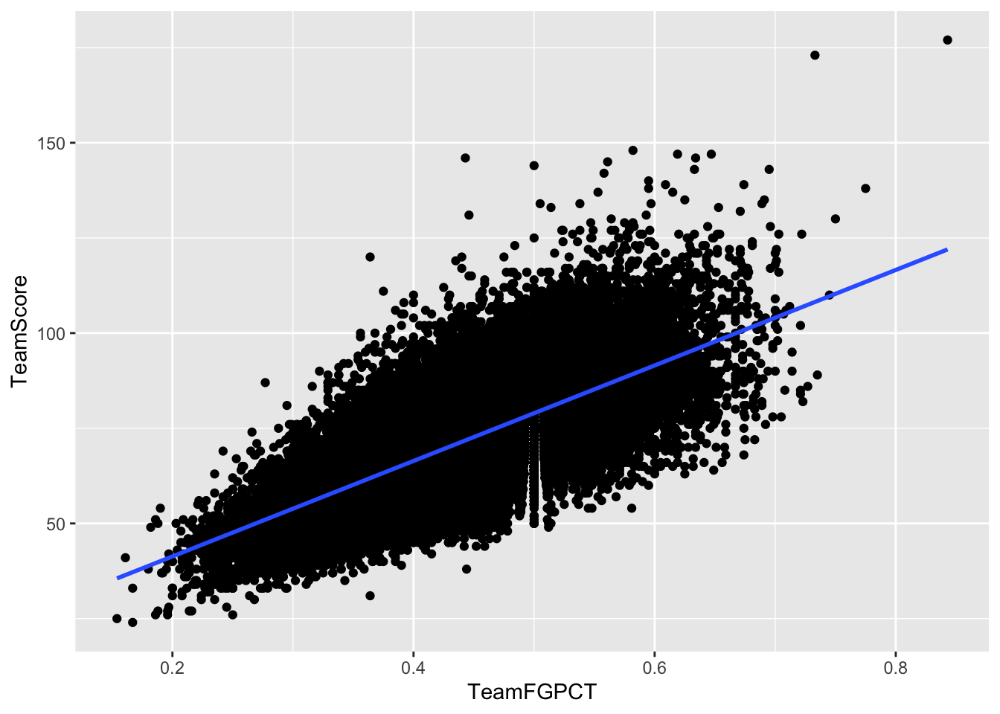

Chapter 2 The modeling process and linear regression
One of the most common – and seemingly least rigorous – parts of sports journalism is the prediction. There are no shortage of people making predictions about who will win a game or a league. Sure they have a method – looking at how a team is playing, looking at the players, consulting their gut – but rarely ever do you hear of a sports pundit using a model.
We’re going to change that. Throughout this book, you’ll learn how to use modeling to make predictions. Some of these methods will predict numeric values (like how many points will a team score based on certain inputs). Some will predict categorical values (W or L, Yes or No, All Star or Not).
Let’s start by looking at predicting how many points the team should score given how well they are shooting. And we’ll use this as a chance to look at linear regression modeling.
If you don’t have them already installed, we’ll need the tidyverse and tidymodels for this book. As well as zoo to make rolling means and hoopR for data.
install.packages(c("tidyverse", "tidymodels", "zoo", "hoopR")After they’ve installed – and if you haven’t this will take a bit – load them.
library(tidyverse)
library(tidymodels)
library(zoo)
library(hoopR)For this walkthrough, we’re going to use a dataset of college basketball games from the 14-15 season through current games from hoopR. You can pull those from games from the library like this:
Let’s load this data and do a little work on it. The first function pulls the team box scores, then I use dplyr’s separate and mutate_at functions to reformat hoopR’s ways of recording shots made and shots attempted.
teamgames <- load_mbb_team_box(seasons = 2015:2022) %>%
separate(field_goals_made_field_goals_attempted, into = c("field_goals_made","field_goals_attempted")) %>%
separate(three_point_field_goals_made_three_point_field_goals_attempted, into = c("three_point_field_goals_made","three_point_field_goals_attempted")) %>%
separate(free_throws_made_free_throws_attempted, into = c("free_throws_made","free_throws_attempted")) %>%
mutate_at(12:35, as.numeric)2.1 Feature engineering
Feature engineering is the process of using what you know about something – domain knowledge – to find features in data that can be used in machine learning algorithms. Sports is a great place for this because not only do we know a lot because we follow the sport, but lots of other people are looking at this all the time. Creativity is good.
Let’s look at basketball games again.
A number of basketball heads – including Ken Pomeroy of KenPom fame – have noticed that one of the predictors of the outcome of basketball games are possession metrics. How efficient are teams with the possessions they have? Can’t score if you don’t have the ball, so how good is a team at pushing the play and getting more possessions, giving themselves more chances to score?
One problem? Possessions aren’t in typical metrics. They aren’t usually tracked. But you can estimate them from typical box scores. The way to do that is like this:
Possessions = Field Goal Attempts – Offensive Rebounds + Turnovers + (0.475 * Free Throw Attempts)
Since we’re trying to predict how many points a team will score, we need to know that. If you look at the data, however, you’ll see that’s not actually in the data. Which is unfortunate. But we can calculate it pretty easily.
Then we’ll use the possessions estimate formula to get that, so we can then calculate points per possession. While we’re here, we’ll add true shooting percentage as well – to try and incorporate some free throw shooting into our metrics.
We’ll save that to a new dataframe called teamstats.
teamstats <- teamgames %>%
group_by(team_short_display_name) %>%
mutate(
team_score = ((field_goals_made-three_point_field_goals_made) * 2) + (three_point_field_goals_made*3) + free_throws_made,
possessions = field_goals_attempted - offensive_rebounds + turnovers + (.475 * free_throws_attempted),
ppp = team_score/possessions,
true_shooting_percentage = (team_score / (2*(field_goals_attempted + (.44 * free_throws_attempted)))) * 100
) %>% ungroup()Now we begin the process of creating a model. Modeling in data science has a ton of details, but the process for each model type is similar.
- Split your data into training and testing data sets. A common split is 80/20.
- Train the model on the training dataset.
- Evaluate the model on the training data.
- Apply the model to the testing data.
- Evaluate the model on the test data.
From there, it’s how you want to use the model. We’ll walk through a simple example here, using the simplest model – a linear model.
Linear models are something you’ve understood since you took middle school math and learned the equation of a line. Remember y = mx + b? It’s back. And, unlike what you complained bitterly in middle school, it’s very, very useful.
What a linear model says, in words is that we can predict y if we multiply a value – a coefficient – by our x value offset with b, which is really the y-intercept, but think of it like where the line starts. Or, expressed as y = mx + b: points = true_shooting_percentage * ? + some starting point. Think of some starting point as what the score should be if the true_shooting_percentage is zero. Should be zero, right? Intuitively, yes, but it won’t always work out so easily.
What we’re trying to do here is predict how many points a team should score given their shooting prowess as a team or their efficiency with the ball, expressed as points per possession. However, to make a prediction, we need to know their stats BEFORE the game – what we knew about the team going into the game in question. We can do that using zoo and rolling means. We’ll add three new columns – the one game lagged rolling mean of shooting percentage, points per possession and true shooting percentage.
teamstats <- teamstats %>%
group_by(team_short_display_name) %>%
mutate(
rolling_shooting_percentage = rollmean(lag(field_goal_pct, n=1), k=2, fill=field_goal_pct),
rolling_ppp = rollmean(lag(ppp, n=1), k=2, fill=ppp),
rolling_true_shooting_percentage = rollmean(lag(true_shooting_percentage, n=1), k=2, fill=true_shooting_percentage)
) %>% ungroup()2.2 Setting up the modeling process
With most modeling tasks we need to start with setting a random number seed to aid our random splitting of data into training and testing.
set.seed(1234)Random numbers play a large role in a lot of data science algorithms, so setting one helps our reproducibility.
After that, we split our data. There’s a number of ways to do this – R has a bunch and you’ll find all kinds of examples online – but Tidymodels has made this easy.
game_split <- initial_split(teamstats, prop = .8)
game_split## <Analysis/Assess/Total>
## <69068/17268/86336>What does this mean? It says that initial_split divided the data into 48,108 games in analysis (or training), 12,026 into assess (or test), of the 60,134 total records in the dataset. But the split object isn’t useful to us. We need to assign them to dataframes. We do so like this:
game_train <- training(game_split)
game_test <- testing(game_split)Now we have two dataframes – game_train and game_test – that we can now use for modeling.
First step to making a model is to set what type of model this will be. We’re going to name our model object – lm_model works because this is a linear model. We’ll use the linear_reg function in parsnip (the modeling library in Tidymodels) and set the engine to “lm.”
lm_model <- linear_reg() %>%
set_engine("lm")We can get a peek at lm_model and make sure we did everything right by just typing it and executing.
lm_model## Linear Regression Model Specification (regression)
##
## Computational engine: lmNow, let’s fit a linear model to our data. We’ll name the fitted model fit_lm and we’ll take our model object that we just created and fit it using the fit function. What goes in the fit function can be read like this:
team_score is approximately modeled by the rolling mean of shooting percentage
The only thing left is to specify the dataset.
fit_lm <- lm_model %>%
fit(team_score ~ rolling_shooting_percentage, data = game_train)Let’s take a look at what the fitted model object tells us about our data.
tidy(fit_lm, conf.int = TRUE)## # A tibble: 2 × 7
## term estimate std.error statistic p.value conf.low conf.high
## <chr> <dbl> <dbl> <dbl> <dbl> <dbl> <dbl>
## 1 (Intercept) 14.4 0.321 44.8 0 13.8 15.0
## 2 rolling_shooting_perc… 1.30 0.00725 179. 0 1.28 1.31The two most important things to see here are the terms and the estimates. Start with rolling_shooting_percentage. What that says is for every 10 percentage points of shooting percentage, a team should score 12.9 points. HOWEVER, the intercept has something to say about this. What the intercept says is that a team with a big fat zero for shooting percentage is going to score just a hair short of 14 points.
Wait … how? Well, are field goals the only way to score in basketball? No. So there’s some of your non-zero intercept.
Think again about y = mx + b. We have our terms here: y is team score, m is 1.296993, x is the team shooting percentage and b is 14.461223. Let’s pretend for a minute that you coached a team that shot 40 percent in college basketball. Our model predicts you would score about 56 points.
2.3 Predicting based on the model
Now, we can take the model predictions and bind them to our dataset. This will be a common step throughout this book so we can see what the model predicted vs what the real world produced.
trainresults <- game_train %>%
bind_cols(predict(fit_lm, game_train))Walking through this, we’re creating a dataframe called trainresults, which is game_train with the results of the predict function bound to it. The predict function takes two arguments – the fitted model and the dataset it is being applied to, which in this case is the same dataset. What will result is our game_train dataset with a new column: .pred
Our first step in evaluating a linear model is to get the r-squared value. The yardstick library (part of Tidymodels) does this nicely. We tell it to produce metrics on a dataset, and we have to tell it what the real world result is (the truth column) and what the estimate column is (.pred).
metrics(trainresults, truth = team_score, estimate = .pred)## # A tibble: 3 × 3
## .metric .estimator .estimate
## <chr> <chr> <dbl>
## 1 rmse standard 11.0
## 2 rsq standard 0.320
## 3 mae standard 8.64We’ll get more into RMSE and MAE later. For now, focus on rsq or r-squared. What that says is that changes in a two game rolling shooting percentage account for 32 percent of the variation in team score. That’s pretty good. Not great, but for one stat, it’s not bad.
A way to look at this is with a scatterplot. The geom_smooth creates its own linear model and puts the line of best fit through our dots.
ggplot() +
geom_point(data=teamstats, aes(x=rolling_shooting_percentage, y=team_score)) +
geom_smooth(data=teamstats, aes(x=rolling_shooting_percentage, y=team_score), method="lm", se=FALSE)## `geom_smooth()` using formula 'y ~ x'## Warning: Removed 924 rows containing non-finite values (stat_smooth).## Warning: Removed 924 rows containing missing values (geom_point).
As you can see, there’s a lot of dots above the line and below the line. That gap is a called a residual. The residual is the actual thing minus the predicted thing. The truth minus our guess. A positive residual – in this case – is good. It means that player is scoring more than we’d predict they would. A negative residual means they’re not scoring as much as we’d expect.
trainresults %>%
mutate(residual = team_score - .pred) %>%
mutate(label = case_when(
residual > 0 ~ "Positive",
residual < 0 ~ "Negative")
) %>%
ggplot() +
geom_point(aes(x=rolling_shooting_percentage, y=team_score, color=label)) +
geom_smooth(aes(x=rolling_shooting_percentage, y=team_score), method="lm", se=FALSE)## `geom_smooth()` using formula 'y ~ x'## Warning: Removed 739 rows containing non-finite values (stat_smooth).## Warning: Removed 739 rows containing missing values (geom_point).
Residuals, aside from telling us who is and isn’t playing well, can tell us if a linear model is appropriate for this data. We can use a scatterplot to reveal this.
trainresults %>%
mutate(residual = team_score - .pred) %>%
ggplot() +
geom_point(aes(x=rolling_shooting_percentage, y=residual))## Warning: Removed 739 rows containing missing values (geom_point).
What we’re looking for is for the dots to be randomly spaced around the plot. It should look like someone spilled Skittles on the floor. This … does. It means a linear model is appropriate here.
More on that in the coming chapters.
2.4 Predicting data we haven’t seen before
Now we can do the same thing, but with the test data.
testresults <- game_test %>%
bind_cols(predict(fit_lm, game_test))What do these metrics look like?
metrics(testresults, truth = team_score, estimate = .pred)## # A tibble: 3 × 3
## .metric .estimator .estimate
## <chr> <chr> <dbl>
## 1 rmse standard 10.9
## 2 rsq standard 0.324
## 3 mae standard 8.59If you look at the r-squared value, you’ll note that when we apply the same model to our test data, the amount of variance that we can explain goes down a little. It’s not much, so the model does a decent job of predicting data we haven’t seen before, which is the whole point of creating a model.
2.5 Looking locally
We can get clearer picture of what these predictions look like if we look at something we know – like this season’s Nebraska team. What does the model say about how they are doing?
First, we can get Nebraska’s games with a filter.
nu <- teamstats %>% filter(season == 2022, team_short_display_name == "Nebraska")Now apply the model to the games.
nupreds <- nu %>%
bind_cols(predict(fit_lm, nu))To really see this clearly, we’ll calculate the residual, then sort by the residual. Where did the model miss the most, for good or bad?
nupreds %>%
mutate(residual = team_score - .pred) %>%
arrange(desc(residual)) %>%
select(game_date, team_short_display_name, opponent_name, team_score, .pred, residual)## # A tibble: 22 × 6
## game_date team_short_display_name opponent_name team_score .pred residual
## <date> <chr> <chr> <dbl> <dbl> <dbl>
## 1 2021-12-02 Nebraska NC State 100 75.6 24.4
## 2 2022-01-03 Nebraska Ohio State 79 62.0 17.0
## 3 2022-02-02 Nebraska Michigan 79 66.4 12.6
## 4 2021-11-10 Nebraska Western Illinois 74 63.8 10.2
## 5 2021-12-08 Nebraska Michigan 67 59.6 7.42
## 6 2021-12-23 Nebraska Kennesaw State 88 81.5 6.48
## 7 2021-11-13 Nebraska Sam Houston 74 67.9 6.11
## 8 2021-11-27 Nebraska South Dakota 83 78.5 4.53
## 9 2021-11-20 Nebraska Idaho State 78 75.0 2.97
## 10 2021-11-17 Nebraska Creighton 69 66.1 2.87
## # … with 12 more rowsWhat does this mean? It says the model predicted the team would score 75 against NC State and they put up 100, for a 24 point miss (residual). Might have had something to do with that game going to three overtimes, but alas, our model can’t get everything right. For most games, the prediction is within a few points – it nailed the Auburn game.
Linear models are incredibly important to understand — they underpin many of the more advanced methods we’ll talk about going forward — so understanding them now is critical.